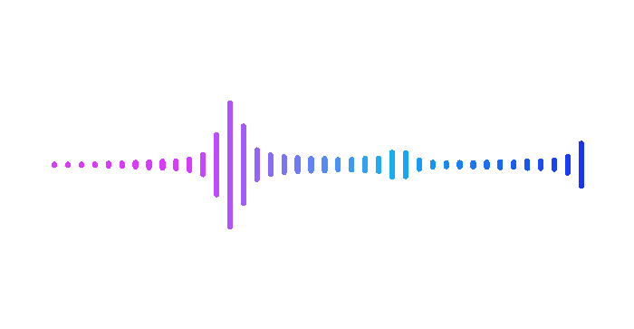

Compresion de Audio
La compresión de audio es un tema amplio que involucra la manipulación de señales sonoras para reducir su tamaño, lo que resulta en la transmisión, almacenamiento y reproducción más eficiente de audio.
Disfruta de la música mientras exploras este contenido.
El sonido:
El sonido es una forma de energía que se propaga en forma de ondas de presión a través de un medio, como el aire, el agua o los sólidos. Las ondas sonoras se generan cuando una fuente, como una bocina, un instrumento musical o una voz humana, vibra y desplaza partículas en el medio circundante. Estas ondas de presión se caracterizan por tres propiedades fundamentales:Frecuencia:
Determina la tonalidad del sonido. Las frecuencias más altas generan sonidos agudos, mientras que las frecuencias más bajas producen sonidos graves.Amplitud:
Afecta el volumen del sonido. Una mayor amplitud resulta en un sonido más alto, mientras que una amplitud menor produce un sonido más suave.Forma de onda:
Define la calidad del sonido, incluyendo su timbre y características armónicas. Diferentes fuentes sonoras tienen diferentes formas de onda, lo que da como resultado una variedad de sonidos.La compresión de audio se enfoca en representar y transmitir estas propiedades de manera eficiente sin comprometer significativamente la calidad perceptual.

Acústica:
La acústica es una rama de la física que se dedica al estudio de la propagación del sonido, sus propiedades y cómo interactúa con el entorno. Los principios de la acústica son fundamentales para el diseño de espacios y sistemas de sonido. Algunos conceptos clave en acústica incluyen:Reflexión:
El sonido puede rebotar en superficies, creando reflexiones que pueden afectar la claridad del sonido.Absorción:
Algunos materiales absorben energía acústica, reduciendo la reflexión y mejorando la calidad del sonido en un espacio.Difracción:
El sonido se dobla alrededor de obstáculos, lo que puede influir en la distribución del sonido en una sala.Reverberación:
La reverberación es la persistencia del sonido después de que la fuente original haya cesado. Su control es crucial en la acústica de espacios.La acústica desempeña un papel vital en la optimización de la calidad del sonido en conciertos, grabaciones y reproducción de audio en general.
El sistema auditivo humano:
El sistema auditivo humano es asombrosamente complejo y consta de tres partes principales: el oído externo, el oído medio y el oído interno. Cuando una onda sonora alcanza el oído externo, es dirigida al tímpano, que vibra en respuesta al sonido. Estas vibraciones se transmiten a través de una cadena de huesecillos en el oído medio y finalmente llegan al oído interno. Allí, las señales son transformadas en señales eléctricas que el cerebro puede interpretar como sonido.El oído humano es capaz de percibir una amplia gama de frecuencias, desde unos pocos hertzios hasta decenas de miles de hertzios, lo que permite la audición de sonidos graves y agudos. Además, el sistema auditivo es sensible a las diferencias en la amplitud y la fase de las ondas sonoras, lo que permite discernir la dirección de las fuentes sonoras y detectar cambios en la calidad del sonido.
La compresión de audio debe considerar estas características del sistema auditivo para garantizar que los cambios en las propiedades del sonido no resulten en una degradación perceptible de la calidad.
Audio digital:
La conversión de señales de audio analógicas a digitales es un proceso clave en la compresión de audio. Para ello, se utiliza la técnica de muestreo, que implica tomar "instantáneas" regulares de la señal de audio y cuantificar los valores de amplitud en esos puntos. Dos parámetros fundamentales en la digitalización del audio son:Tasa de muestreo:
Esta tasa determina cuántas instantáneas se toman por segundo. Una tasa de muestreo más alta captura más detalles de la señal, pero también requiere más espacio de almacenamiento y ancho de banda para transmitirla.Resolución de cuantificación:
Esta medida indica la precisión de la representación numérica de la amplitud. Una mayor resolución de cuantificación permite una representación más precisa de la señal, pero también requiere más bits para codificarla.La elección adecuada de la tasa de muestreo y la resolución de cuantificación es fundamental para mantener una calidad de audio aceptable durante el proceso de compresión de audio.

Audio analógo:
El audio analógico se refiere a la representación continua de señales de sonido en forma de ondas eléctricas o mecánicas.En contraste con el audio digital, que utiliza representaciones discretas y numéricas de la información de sonido, el audio analógico mantiene una representación análoga a la forma original de la señal.
En sistemas de audio analógicos, las variaciones de presión del sonido se traducen directamente en cambios correspondientes en la señal eléctrica, lo que permite una reproducción más cercana a la fuente original. Ejemplos comunes de tecnologías de audio analógico incluyen los discos de vinilo y las cintas magnéticas.
Modulación de pulsos codificados (PCM):
La modulación de pulsos codificados es el método más común para digitalizar señales de audio. Implica tomar muestras regulares de la señal de audio y cuantificar los valores de amplitud en esos puntos de muestreo. La calidad del audio digital resultante depende en gran medida de la tasa de muestreo y la precisión de la cuantificación. Cuanto mayor sea la tasa de muestreo y la resolución de cuantificación, mayor será la fidelidad de la representación digital del sonido original.
Amplitud modulada (AM):
La modulación de amplitud (AM) es una técnica de modulación que varía la amplitud de una onda portadora de alta frecuencia de acuerdo con la señal de audio que se desea transmitir. La modulación AM fue ampliamente utilizada en la radiodifusión en el pasado, donde la amplitud de la portadora se ajustaba para representar las variaciones en la señal de audio. Sin embargo, la AM es más vulnerable a interferencias y ruido en comparación con la modulación de frecuencia (FM), que ofrece una mayor calidad de sonido y se utiliza en la mayoría de las emisoras de radio en la actualidad.Frecuencia modulada (FM):
La modulación de frecuencia (FM) es una técnica de modulación que varía la frecuencia de una onda portadora de alta frecuencia de acuerdo con la señal de audio que se está transmitiendo. La FM se utiliza en la radio FM y otros sistemas de comunicación de alta calidad debido a su resistencia al ruido y su capacidad para transmitir una calidad de sonido superior en comparación con la AM. La variación de la frecuencia de la onda portadora codifica la información de audio.Formatos de audio:
Existen varios formatos de audio, cada uno con sus propias características y aplicaciones:MP3:
Utiliza compresión con pérdida para reducir el tamaño del archivo al eliminar datos no críticos para el oído humano. Es ampliamente utilizado para la música en línea debido a su buen equilibrio entre calidad y tamaño de archivo.AAC:
Similar al MP3, ofrece una mejor calidad de sonido a tasas de bits más bajas y es el formato estándar para música en iTunes.WAV:
Almacena audio sin compresión, lo que garantiza la máxima calidad de sonido, pero resulta en tamaños de archivo grandes.FLAC:
Utiliza compresión sin pérdida para reducir el tamaño del archivo sin pérdida de calidad, siendo una elección popular para audiófilos y la preservación de archivos de alta calidad.OGG:
Ofrece una calidad de audio similar al MP3 pero con compresión sin pérdida en algunos casos, además de ser de código abierto y utilizado en aplicaciones multimedia.La elección del formato de audio depende de factores como la calidad deseada, el tamaño de archivo y la compatibilidad con los dispositivos de reproducción.
Estos temas son fundamentales para comprender la compresión de audio y cómo se procesan y transmiten las señales de sonido en el mundo digital.